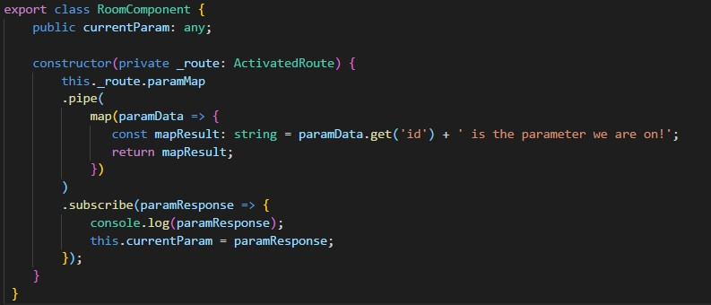

So we got a little bit into using .map as it involves array to mutate one array into another in order to conform to types. This also works with observables, and is a very important concept pick up; we can take data from a subscription, use map to mutate the data, and then subscribe to actually do something with it.
.pipe is a little bit of a new thing in rxjs, also known as a lettable operator. It allows us to pass data through a set of functions, acting a pipeline of sorts, hence the name.
Hopefully description should sound familiar with what we are trying to do, so lets get started. Let's head into our room.component.ts where the observable lies inside the constructor. Begin by importing map up top from 'rxjs/operators/map'. Then insert a .pipe just before your .subscribe with your observable:
this._route.paramMap
.pipe()
.subscribe( paramResponse => {
this.currentParam = paramResponse.get('id');
});
Notice how the pipe is in the middle of our subscription. Hopefully coding it out like this illustrates how pipe tends to act as a middle-man for our subscription.
Now we gotta throw our map in there. Let's keep the following in mind.
Lets add a simple text string onto our parameter.
this._route.paramMap
.pipe(
map( paramData => {
const mapResult: string = paramData.get('id') + ' is the paramter we are on!';
return mapResult;
})
)
.subscribe( paramResponse => {
this.currentParam = paramResponse.get('id'); <-- This is probably giving you an error
});
A couple of things are happening here: We are using map inside our pipeline. We pass our paramMap service as the cleverly titles paramData. A new string variable is created by the name mapResult that takes our get command we used in our subscription to get the parameter name and tacked on a text string. We then return that variable as the result.
But this has a consequence: Because we returned a string, the data passing out of the pipeline is now of type string, not the type paramMap that we got from the interface. As a result, the paramResponse inside our subscription is now a string. And as you can see, we are trying to .get on a string. That's a no-no, so lets fix that error.
this._route.paramMap
.pipe(
map( paramData => {
const mapResult: string = paramData.get('id') + ' is the paramter we are on!';
return mapResult;
})
)
.subscribe( paramResponse => {
this.currentParam = paramResponse;
});
The error should be gone, and check out the result. We successfully tacked on a string to our parameter. Superb!
Why do we need to do any of this? Couldn't I just add that string in our .subscribe?
A good question. Here's a couple of reasons:
Here's a final look at my room component for reference:
